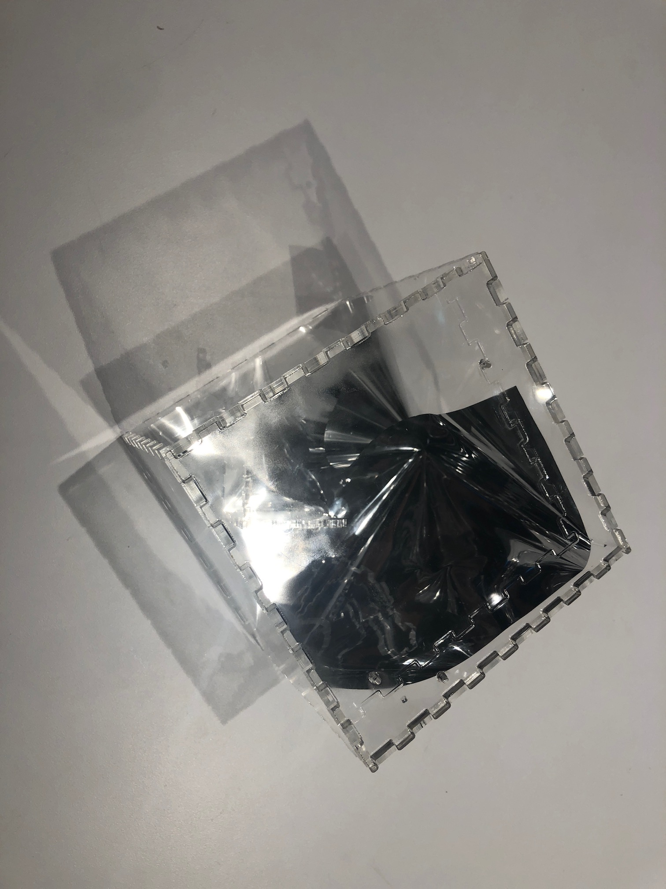
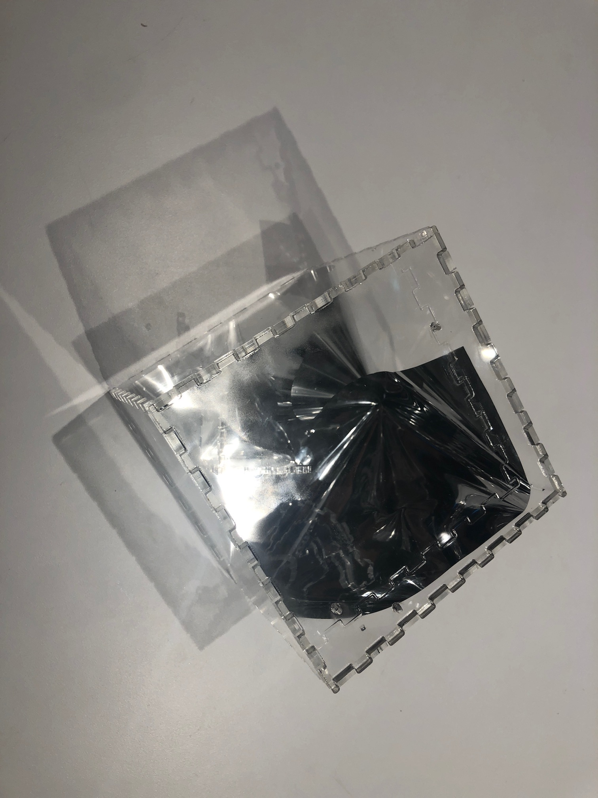

This is current research I am pursuing, so this page is in constant flux. This my youngest and most independent work. Some photos are below this larger text description.
Goal: allowing users to easily design parametric lighting solutions with scattering media and lasers to illuminate spaces in a new and scalable way.
This project is about creating a framework for a new methodology of lighting through the use of scattering. This is accomplished with low voltage, high focus lasers that are not typically visible to the human eye without diffusion. By combining various geometry options with diffusers, we hope to create a mathematical model and design framework as an additional alternative to creative lighting expression.
Research Questions
 
